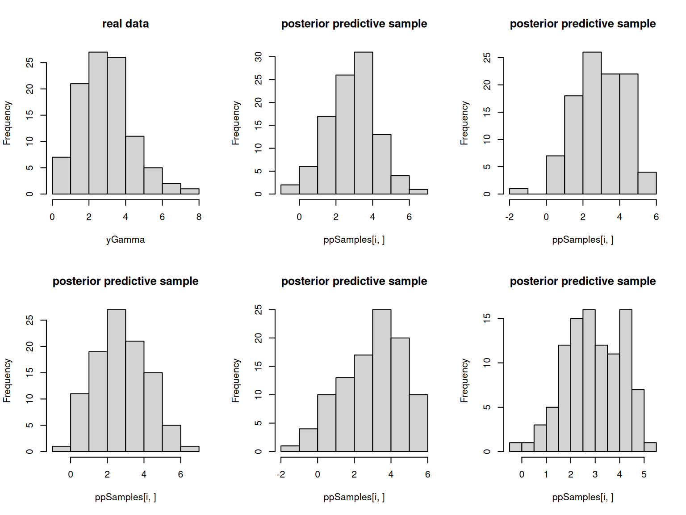
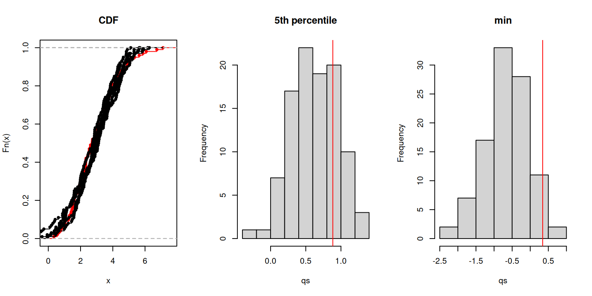
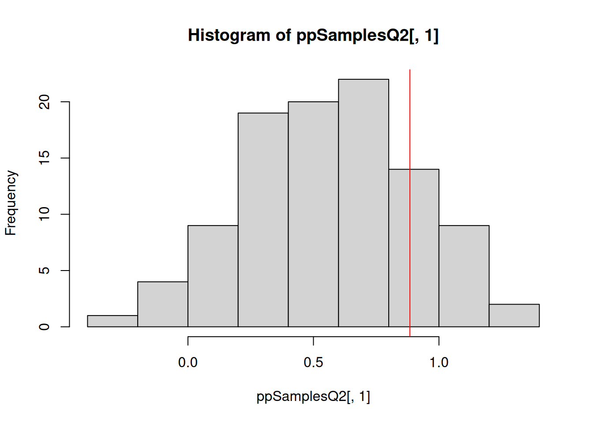

[Note] Detected possible use of R functions in nimbleFunction run code.
For this nimbleFunction to compile, 'browser' must be defined as a nimbleFunction, nimbleFunctionList, or nimbleList.
Stepping through uncompiled execution
Code
mcmcConf <-configureMCMC(DEmodel, nodes =NULL) ## Make an empty configuration
# run this on your own to step through in debug (browser) mode.mcmc <-buildMCMC(mcmcConf)mcmc$run(5)
Let’s modify the basic RW sampler
A user wrote to nimble-users recently asking how to do MCMC sampling on subsets of a multivariate node, e.g., for missing data applications.
Unfortunately, nimble was not set up to do this (at the time the user asked; it is now). The user took our basic RW sampler and modified it for his need.
Let’s suppose we have this basic model with a node, say y[1:3], where y[2] is missing.
nimble easily handles nodes that are missing (assigning an MCMC sampler to them) but not multivariate nodes that are a mix of missing and non-missing. But we can work around that.
#### from setup code:
## set incorrect defaults so that it throws an error if not explicitly set
index <- extractControlElement(control, 'index', 1:2)
## checks on index
if(length(index) != 1) stop('length of index must be 1')
if(index < 1 | index > d) stop('index must be within length of target')
#### from run code:
currentValue <- model[[target]] # recall this is a vector, not a scalar
propValue <- model[[target]]
propLogScale <- 0
if(logScale) {
propLogScale <- rnorm(1, mean = 0, sd = scale)
propValue[index] <- currentValue[index] * exp(propLogScale)
} else {
propValue[index] <- rnorm(1, mean = currentValue[index], sd = scale)
}
model[[target]] <<- propValue
Using the new sampler
Using the new sampler in nimble is easy.
Code
source('conditional_RW.R')index <-which(is.na(y))conf$addSampler(target ='y[1:3]', type ='conditional_RW', control =list(index = index))mcmc <-buildMCMC(conf)cModel <-compileNimble(model)
Compiling
[Note] This may take a minute.
[Note] Use 'showCompilerOutput = TRUE' to see C++ compilation details.
Code
cmcmc <-compileNimble(mcmc, project = model)
Compiling
[Note] This may take a minute.
[Note] Use 'showCompilerOutput = TRUE' to see C++ compilation details.
Let’s work on a more involved case where we can’t make such simple modifications to an existing sampler.
We’ll put the pieces together for the E. cervi example as follows:
Use the original parameterization.
Write a sampler that proposes to add \(\delta \sim N(0, \mbox{scale})\) to the two sex-specific intercepts and to subtract the same \(\delta\) from every farm_effect[i] (\(i = 1 \ldots 24\)).
This is a scalar sampler in rotated coordinates.
The coordinate transformation is linear, so there is no determinant of a Jacobian matrix to incorporate. In general one needs to be careful to use distribution theory correctly if non-linear coordinate transformations are involved. We are covering the software, not the math.
We want proposal scale to be adaptive (self-tuning as the MCMC proceeds). We will just copy from NIMBLE’s sampler_RW to implement that.
One might be interested in accessing compiled internals. Here is code from an on-the-fly example.
Code
## Make compiled modelcDEmodel <-compileNimble(DEmodel)
Compiling
[Note] This may take a minute.
[Note] Use 'showCompilerOutput = TRUE' to see C++ compilation details.
Code
## Set internal option to access compiled samplers inside of compiled mcmc belownimbleOptions(buildInterfacesForCompiledNestedNimbleFunctions =TRUE)## Compile the MCMCcmcmc <-compileNimble(mcmc)
Compiling
[Note] This may take a minute.
[Note] Use 'showCompilerOutput = TRUE' to see C++ compilation details.
Code
## See that the run function is an interface to compiled code via .Callcmcmc$run
Class method definition for method run()
function (niter, reset = TRUE, resetMV = FALSE, time = FALSE,
progressBar = TRUE, nburnin = 0, thin = -1, thin2 = -1, resetWAIC = TRUE,
initializeModel = TRUE, chain = 1)
{
if (is.null(".basePtr"))
stop("Object for calling this function is NULL (may have been cleared)")
ans <- .Call("CALL_MCMC_run", niter, reset, resetMV, time,
progressBar, nburnin, thin, thin2, resetWAIC, initializeModel,
chain, .basePtr)
ans <- NULL
invisible(ans)
}
<environment: 0x5c2d60545e30>
Code
## See where our sampler of interest is in the sampler configuration listmcmcConf$printSamplers()
## And see that the built and compiled samplerFunctions are in the same ordercmcmc$samplerFunctions
Reference class object of class "nimPointerList"
Field "contentsList":
[[1]]
Derived CnimbleFunctionBase object (compiled nimbleFunction) for nimbleFunction with class sampler_RW
[[2]]
Derived CnimbleFunctionBase object (compiled nimbleFunction) for nimbleFunction with class sampler_RW
[[3]]
Derived CnimbleFunctionBase object (compiled nimbleFunction) for nimbleFunction with class sampler_RW
[[4]]
Derived CnimbleFunctionBase object (compiled nimbleFunction) for nimbleFunction with class sampler_RW
[[5]]
Derived CnimbleFunctionBase object (compiled nimbleFunction) for nimbleFunction with class sampler_RW
[[6]]
Derived CnimbleFunctionBase object (compiled nimbleFunction) for nimbleFunction with class sampler_RW
[[7]]
Derived CnimbleFunctionBase object (compiled nimbleFunction) for nimbleFunction with class sampler_RW
[[8]]
Derived CnimbleFunctionBase object (compiled nimbleFunction) for nimbleFunction with class sampler_RW
[[9]]
Derived CnimbleFunctionBase object (compiled nimbleFunction) for nimbleFunction with class sampler_RW
[[10]]
Derived CnimbleFunctionBase object (compiled nimbleFunction) for nimbleFunction with class sampler_RW
[[11]]
Derived CnimbleFunctionBase object (compiled nimbleFunction) for nimbleFunction with class sampler_RW
[[12]]
Derived CnimbleFunctionBase object (compiled nimbleFunction) for nimbleFunction with class sampler_RW
[[13]]
Derived CnimbleFunctionBase object (compiled nimbleFunction) for nimbleFunction with class sampler_RW
[[14]]
Derived CnimbleFunctionBase object (compiled nimbleFunction) for nimbleFunction with class sampler_RW
[[15]]
Derived CnimbleFunctionBase object (compiled nimbleFunction) for nimbleFunction with class sampler_RW
[[16]]
Derived CnimbleFunctionBase object (compiled nimbleFunction) for nimbleFunction with class sampler_RW
[[17]]
Derived CnimbleFunctionBase object (compiled nimbleFunction) for nimbleFunction with class sampler_RW
[[18]]
Derived CnimbleFunctionBase object (compiled nimbleFunction) for nimbleFunction with class sampler_RW
[[19]]
Derived CnimbleFunctionBase object (compiled nimbleFunction) for nimbleFunction with class sampler_RW
[[20]]
Derived CnimbleFunctionBase object (compiled nimbleFunction) for nimbleFunction with class sampler_RW
[[21]]
Derived CnimbleFunctionBase object (compiled nimbleFunction) for nimbleFunction with class sampler_RW
[[22]]
Derived CnimbleFunctionBase object (compiled nimbleFunction) for nimbleFunction with class sampler_RW
[[23]]
Derived CnimbleFunctionBase object (compiled nimbleFunction) for nimbleFunction with class sampler_RW
[[24]]
Derived CnimbleFunctionBase object (compiled nimbleFunction) for nimbleFunction with class sampler_RW
[[25]]
Derived CnimbleFunctionBase object (compiled nimbleFunction) for nimbleFunction with class sampler_RW
[[26]]
Derived CnimbleFunctionBase object (compiled nimbleFunction) for nimbleFunction with class sampler_RW
[[27]]
Derived CnimbleFunctionBase object (compiled nimbleFunction) for nimbleFunction with class sampler_RW
[[28]]
Derived CnimbleFunctionBase object (compiled nimbleFunction) for nimbleFunction with class sampler_RW
[[29]]
Derived CnimbleFunctionBase object (compiled nimbleFunction) for nimbleFunction with class sampler_RW
[[30]]
Derived CnimbleFunctionBase object (compiled nimbleFunction) for nimbleFunction with class ourSampler
Field "baseClass":
function ()
{
}
<bytecode: 0x5c2d5cf309c0>
<environment: 0x5c2d50c17bd0>
Field "CobjectInterface":
An object of class "uninitializedField"
Slot "field":
[1] "CobjectInterface"
Slot "className":
[1] "ANY"
Code
## Run the MCMC (could use runMCMC(cmcmc, ...) instead, but time=TRUE is not available via runMCMC)cmcmc$run(niter =1000, time =TRUE)
## See how to look at the mvSaved object from the compiled MCMC## (There are more direct ways to access values in mvSaved. See modelValues## documentation.)## This would show the full object: as.matrix(cmcmc$mvSaved)## This is what I was looking for in the live session:cmcmc$mvSaved[['farm_effect']]
## See time spent in each sampler (this will not include the 100 iterations## we did "by hand", only iterations via cmcmc$run(), or runMCMC, which calls## cmcmc$run).cmcmc$getTimes()
The Barker sampler is a built-in sampler in NIMBLE.
Since all samplers are just nimbleFunctions with a few special requirements, we can easily inspect the code, modify/extend a sampler, and use a modified or new sampler in a NIMBLE MCMC.
Let’s see what this looks like for a (simplified) Barker sampler.
Code
sampler_barker <-nimbleFunction(contains = sampler_BASE, # Required class inheritance to work within NIMBLE's MCMC enginesetup =function(model, mvSaved, target, control) {## Set algorithm control knobs. scale <-1; sigma <-0.1; adaptIntervalCov <-10 adaptFactorExponent <-0.6# Per Livingstone & Zanella 2022. targetAcceptanceRate <-0.574# Per Vogrinc et al. 2023.## Determine relevant nodes in the model. targetNodes <- model$expandNodeNames(target) targetNodesAsScalars <- model$expandNodeNames(target, returnScalarComponents =TRUE) calcNodes <- model$getDependencies(targetNodes)## Process bounds and transformations as sampler works on whole real line. my_parameterTransform <-parameterTransform(model, targetNodesAsScalars) d <- my_parameterTransform$getTransformedLength() nimDerivs_wrt <-1:d## Boilerplate code to set up node information needed for AD. derivsInfo_return <-makeModelDerivsInfo(model, targetNodes, calcNodes) nimDerivs_updateNodes <- derivsInfo_return$updateNodes nimDerivs_constantNodes <- derivsInfo_return$constantNodes## Set up proposal covariance structures. propCov <-diag(d) U <-chol(propCov) empirSamp <-matrix(0, nrow = adaptIntervalCov, ncol = d) zeros <-nimNumeric(d, value =0) gradCurrent <-numeric(d); gradProposed <-numeric(d) },run =function() { current <- my_parameterTransform$transform(values(model, targetNodes)) oldLogDetJacobian <- my_parameterTransform$logDetJacobian(current)## Implement Barker proposal following Livingstone and Zanella (2022). gradCurrent <<-gradient(current) z <- scale *rnorm(d, sqrt(1-sigma^2), sigma) noflipProb <-expit((U%*%gradCurrent)[,1]*z) noflip <-2* (runif(d) < noflipProb) -1 diff <- noflip * z proposal <- current + (L %*% diff)[,1]values(model, targetNodes) <<- my_parameterTransform$inverseTransform(proposal)## Determine accept/reject. gradProposed <<-gradient(proposal) newLogDetJacobian <- my_parameterTransform$logDetJacobian(proposal) lpD <- model$calculateDiff(calcNodes) + newLogDetJacobian - oldLogDetJacobian +calculateLogHastingsRatio(diff) jump <-decide(lpD)## Cache current state of model in a "modelValues" data structure.if(jump) nimCopy(from = model, to = mvSaved, row =1, nodes = calcNodes, logProb =TRUE)elsenimCopy(from = mvSaved, to = model, row =1, nodes = calcNodes, logProb =TRUE)adaptPropCov(min(1,exp(lpD))},methods =list(gradient =function(values =double(1)) {# Use NIMBLE's AD system to get first derivative of model log-density w.r.t. parameters. derivsOutput <-nimDerivs(calcLogProb(values), order =1, wrt = nimDerivs_wrt,model = model, updateNodes = nimDerivs_updateNodes,constantNodes = nimDerivs_constantNodes)returnType(double(1))return(derivsOutput$jacobian[1, 1:d]) },inverseTransformStoreCalculate =function(values =double(1)) {values(model, targetNodes) <<- my_parameterTransform$inverseTransform(values)return(model$calculate(calcNodes))returnType(double()) },calcLogProb =function(values =double(1)) {return(inverseTransformStoreCalculate(values) + my_parameterTransform$logDetJacobian(values))returnType(double()) }, calculateLogHastingsRatio =function(diff =double(1)) { beta1 <- (U %*% gradProposed)[,1] * diff beta2 <-- (U %*% gradCurrent)[,1] * diffreturn(sum(pmax(beta2, zeros) -pmax(beta1, zeros)) +sum(log1p(exp(-abs(beta2))) -log1p(exp(-abs(beta1)))))returnType(double()) },adaptPropCov =function(acceptProb =double()) {## Adapt the proposal covariance using `adaptFactorExponent`, `targetAcceptanceRate`,## `empirSamp`, etc.## Code omitted for brevity. See `nimble::sampler_barker`. } },reset =function() {## Not shown: boilerplate code to reset state of sampler } ),buildDerivs =list(inverseTransformStoreCalculate =list(), calcLogProb =list(), gradient_aux =list() ))
Introduction to modelValues
A modelValues class does the job of holding multiple sets of values of
model variables and
log probabilities (“logProbs”) of stochastic nodes.
We think of each set of values as a “row”.
modelValues classes are like nimbleFunctions in that:
They can be compiled.
They should work the same way compiled and uncompiled.
MCMC output is stored in a modelValues object (called mvSamples).
Each modelValues class comes from a configuration of what variables are needed (and their types and sizes).
Typically the configuration is generated from a model or from variables monitored in MCMC.
(Actually, one can hand-configure a modelValues in any way one wants.)
MCMC uses one modelValues object configured for all model variables and logProbs.
Only a single “row” is needed.
This is the mvSaved and must be synchronized with the model at entry and exit of each sampler.
Recall our use of modelValues in samplers and MCMCs
We used a “one-row” modelValues called mvSaved that has the current state of the model.
In the overall MCMC we use a modelValues called mvSamples with as many rows as saved iterations that stores the posterior samples for the monitored nodes.
We’ll see more use of modelValues in the next examples on using nimbleFunctions for post-processing.
nimbleFunctions for post-processing: posterior predictive checks
One standard posterior predictive check is to assess (graphically/informally or formally) whether simulated data from the posterior predictive distribution are similar to the actual data.
We could do this by adding additional ‘pseudo-data’ nodes to the model, but this will slow down the overall MCMC.
Often we want to do this sort of thing after the MCMC is run, using the samples from the posterior.
Suppose we want to simulate many datasets from the posterior predictive distribution. What do we need to do?
Run the MCMC, monitoring all nodes that are parents of the data nodes.
Iterate through the posterior samples and:
put them in the model,
simulate new datasets, and
store the simulated datasets.
Carry out our assessment.
Note, we could do this fully in R, without using any compiled operations. We could also do this mostly in R but use the compiled model. Either can be fine and using a compiled nimbleFunction may only matter if these other approaches are too slow.
Posterior predictive sampling in R
Let’s take a situation where we apply a normal model to data actually generated from a different distribution.
Running calculate on model
[Note] Any error reports that follow may simply reflect missing values in model variables.
Checking model sizes and dimensions
Code
## Ensure we have the nodes needed to simulate new datasetsdataNodes <- model_basic$getNodeNames(dataOnly =TRUE)parentNodes <- model_basic$getParents(dataNodes, stochOnly =TRUE) # `getParents` is new in nimble 0.11.0conf <-configureMCMC(model_basic, monitors = parentNodes)
We’ll loop over the samples and use the compiled model (uncompiled would be ok too, but slower) to simulate new datasets.
Code
## Ensure we have both data nodes and deterministic intermediates (e.g., lifted nodes)simNodes <- model_basic$getDependencies(parentNodes, self =FALSE) ppSamples <-matrix(0, nrow = niter, ncol =length(model_basic$expandNodeNames(dataNodes, returnScalarComponents =TRUE)))## Determine ordering of variables in `mvSamples` modelValues and therefore in `samples`vars <- cmcmc_basic$mvSamples$getVarNames()## Quick check of variable orderingvars
par(mfrow =c(2, 3))hist(yGamma, main ='real data')sub <-seq(1, 100, length =5)for(i in sub)hist(ppSamples[i, ], main ='posterior predictive sample')

Code
par(mfrow =c(1,3))plot(ecdf(yGamma), col ='red', main ='CDF')for(i in sub)lines(ecdf(ppSamples[i, ]))## Compare 5th percentilesqs <-apply(ppSamples, 1, quantile, .05)hist(qs, main ='5th percentile')abline(v =quantile(yGamma, .05), col ='red')## Compare minimaqs <-apply(ppSamples, 1, min)hist(qs, main ='min')abline(v =min(yGamma), col ='red')

So it would be a bit hard to say based on this whether the model is appropriate or not, unless we had substantive reasons to know that the observations had to be non-negative.
The approach above could be slow, even with a compiled model, because the loop is carried out in R. We could instead do all the work in a compiled nimbleFunction.
Posterior predictive sampling: writing a nimbleFunction
Let’s set up a nimbleFunction. In the setup code, we’ll manipulate the nodes and variables, similarly to the code we just discussed. In the run code, we’ll loop through the samples and simulate, also similarly.
Remember that all querying of the model structure needs to happen in the setup code.
So we get exactly the same results (note the use of set.seed) but faster.
Here the speed doesn’t really matter but for more samples and larger models it often will, even after accounting for the time spent to compile the nimbleFunction.
Calling out to R in a nimbleFunction
Suppose we want to do some calculation that is hard or impossible to implement in the NIMBLE DSL, i.e., the functionality that is available in run code that NIMBLE can compile to C++. We can actually call arbitrary R code from within run code.
Here we’ll use an existing R function. Other options include:
writing our own R function from scratch
writing a simple wrapper R function that calls an existing R function but rearranges arguments for convenience
Compiling
[Note] This may take a minute.
[Note] Use 'showCompilerOutput = TRUE' to see C++ compilation details.
Code
set.seed(1)## This will work with one or more quantiles. Here we get a 1-column matrix output.ppSamplesQ <- ppSamplerQ_example_comp$run(samples, .05)hist(ppSamplesQ[ , 1])abline(v =quantile(yGamma, .05), col ='red')
Calling external C/C++ code
Let’s repeat the external call but using C++ code. In this case, there’s not much advantage to having our own C++ code and the R quantile function is well-vetted, so the main point is illustrating how to call out to C++.
Note: nimble auto-generates C++ code from run code. Here we are writing our own C++ code and calling that from a nimbleFunction.
Compiling
[Note] This may take a minute.
[Note] Use 'showCompilerOutput = TRUE' to see C++ compilation details.
Code
set.seed(1)## This will work with one or more quantiles. Here we get a 1-column matrix output.ppSamplesQ2 <- ppSamplerQ2_example_comp$run(samples, .05)hist(ppSamplesQ2[ , 1])abline(v =quantile(yGamma, .05), col ='red')

Comments:
We allocate space for the result in the nimbleFunction. Don’t allocate memory in the C/C++ code as nimbleExternalCall and return the allocated object, as NIMBLE is not set up to deal with freeing memory.
Allocating memory and de-allocating it within the C/C++ code is fine.
The values are not exactly what we got from the R quantile function. We’d want to compare exactly how empirical quantiles are defined by the R and C++ code.
Source Code
---title: "nimbleFunction programming"subtitle: "NIMBLE Alaska ASA Workshop"author: "NIMBLE Development Team"date: "June 2026"format: html: theme: cosmo css: ../styles.css toc: true code-copy: true code-block-background: true code-fold: show code-tools: trueexecute: freeze: auto---<style>slides > slide {overflow-x:auto!important;overflow-y:auto!important;}</style>```{r setup, include=FALSE}knitr::opts_chunk$set(echo =TRUE)library(nimble)if(!require(coda))warning("This Rmd file needs package coda")has_compareMCMCs <-require(compareMCMCs)if(!has_compareMCMCs)warning("This Rmd file uses package compareMCMCs. Sections using it will be skipped.")generate_orig_results <-FALSE```# Agenda1. Review of nimbleFunctions with setupCode2. nimbleFunctions for new (i.e., user-defined) samplers a. Design of NIMBLE's MCMC system b. Setting up a new sampler: A simple Metropolis-Hastings example c. Worked example: sampler that jointly updates intercepts and random effects in the E. cervi example d. Example with gradients (AD): simplified Barker sampler3. modelValues for storing values from a model4. nimbleFunctions for post-processing: - Worked example: posterior predictive checks5. Calling out to R and C++ from nimbleFunctions# Load Deer E. cervi example```{r load-DeerEcervi}source(file.path("..", "examples", "DeerEcervi", "load_DeerEcervi.R"), chdir =TRUE)set.seed(123)DEmodel <-nimbleModel(DEcode,constants = DEconstants,data =list(Ecervi_01 = DeerEcervi$Ecervi_01),inits =DEinits())```# Design of `nimble`'s MCMC systemHere is a figure of MCMC configuration and MCMCs: [nimble_MCMC_design.pdf](nimble_MCMC_design.pdf)1. MCMC configuration object: Contains a list of sampler assignments, not actual samplers.2. MCMC object: Contains a list of sampler objects.To write new samplers, we need to understand:- Two-stage evaluation of nimbleFunctions with setup code.- Setup (configuration) rules for using a new MCMC sampler- Run-time rules for management of model calculations and saved states.- More about nimbleFunction programming.# Example of MCMC configuration objectLook at MCMC configuration object for just a few nodes```{r}mcmcConf <-configureMCMC(DEmodel, nodes ='farm_effect[1:3]')class(mcmcConf)ls(mcmcConf)fe1_sampler <- mcmcConf$getSamplers("farm_effect[1]")[[1]]class(fe1_sampler)ls(fe1_sampler)fe1_sampler$targetfe1_sampler$control```# What happens from an MCMC configuration object?Eventually, an MCMC sampler object is created by a call like this (for adaptive random-walk MH):```{r, eval=FALSE}sampler_RW(model, mvSaved, target, control)```- This is stage one of two-stage evaluation. It instantiates an object of a `sampler_RW` class.- `model` is the model.- `mvSaved` is a `modelValues` object for keeping a set of saved model states (more later).- `target` is a vector of target node names.- `control` is a list of whatever sampler-specific configuration settings are needed.# A basic Random-Walk Metropolis-Hastings sampler```{r}ourMH <-nimbleFunction(name ='ourMH', # Convenient for class name of R reference class and generated C++ classcontains = sampler_BASE, # There is a simple class inheritance system.setup =function(model, mvSaved, target, control) { # REQUIRED setup arguments scale <-if(!is.null(control$scale)) control$scale else1# Typical extraction of control choices calcNodes <- model$getDependencies(target) # Typical query of model structure }, # setup can't return anythingrun =function() { currentValue <- model[[target]] # extract current value currentLogProb <- model$getLogProb(calcNodes) # get log "denominator" from cached values proposalValue <-rnorm(1, mean = currentValue, sd = scale) # generate proposal value model[[target]] <<- proposalValue # put proposal value in model proposalLogProb <- model$calculate(calcNodes) # calculate log "numerator" logAcceptanceRatio <- proposalLogProb - currentLogProb # log acceptance ratio# Alternative:# logAcceptanceRatio <- model$calculateDiff(calcNodes) accept <-decide(logAcceptanceRatio) # utility function to generate accept/reject decisionif(accept) # accept: synchronize model -> mvSavedcopy(from = model, to = mvSaved, row =1, nodes = calcNodes, logProb =TRUE)else# reject: synchronize mvSaved -> modelcopy(from = mvSaved, to = model, row =1, nodes = calcNodes, logProb =TRUE) },methods =list( # required method for sampler_BASE base classreset =function() {} ))```# Rules for each sampler### setup function- The four arguments, named exactly as shown, are required. This allows `buildMCMC` to create any sampler correctly.### run function- The `mvSaved` ("modelValues saved") has a saved copy of all model variables and log probabilities- Upon entry, `run()` can assume: - the model is fully calculated (so `getLogProb` and `calculateDiff` make sense). - `mvSaved` and the model are synchronized (have the same values).- Upon exit, `run()` must ensure those conditions are met. - That way the next sampler can operator correctly.- Between entry and exit, `run()` can manipulate the model in any way necessary.### reset function- To match the `sampler_BASE` definition, all samplers must have a `reset()` function.# Stepping through uncompiled executionVersion with `browser()`s```{r}ourMH_debug <-nimbleFunction(name ='ourMH_debug',contains = sampler_BASE,setup =function(model, mvSaved, target, control) {browser() scale <-if(!is.null(control$scale)) control$scale else1 calcNodes <- model$getDependencies(target) }, run =function() {browser() currentValue <- model[[target]] currentLogProb <- model$getLogProb(calcNodes) proposalValue <-rnorm(1, mean = currentValue, sd = scale) model[[target]] <<- proposalValue proposalLogProb <- model$calculate(calcNodes) logAcceptanceRatio <- currentLogProb - proposalLogProb accept <-decide(logMHR) if(accept) copy(from = model, to = mvSaved, row =1, nodes = calcNodes, logProb =TRUE)elsecopy(from = mvSaved, to = model, row =1, nodes = calcNodes, logProb =TRUE) },methods =list( reset =function() {} ))```# Stepping through uncompiled execution```{r}mcmcConf <-configureMCMC(DEmodel, nodes =NULL) ## Make an empty configurationmcmcConf$addSampler(type ="ourMH_debug", target ='farm_effect[1]')``````{r, eval=FALSE}# run this on your own to step through in debug (browser) mode.mcmc <-buildMCMC(mcmcConf)mcmc$run(5)```# Let's modify the basic RW samplerA user wrote to nimble-users recently asking how to do MCMC sampling on subsets of a multivariate node, e.g., for missing data applications.Unfortunately, `nimble` was not set up to do this (at the time the user asked; it is now). The user took our basic RW sampler and modified it for his need.Let's suppose we have this basic model with a node, say `y[1:3]`, where `y[2]` is missing.`nimble` easily handles nodes that are missing (assigning an MCMC sampler to them) but not multivariate nodes that are a mix of missing and non-missing. But we can work around that. ```{r}code <-nimbleCode({ y[1:n] ~dmnorm(mu[1:n], cov = Sigma[1:n, 1:n])})n <-3mu <-rep(0, n)Sigma <-matrix(c(1, .9, -.7, .9, 1, -.6, -.7, -.6, 1), 3, 3)Sigmay <-c(0.2, NA, -0.5)yFull <- yyFull[2] <-0model <-nimbleModel(code, inits =list(y = yFull),constants =list(n = n, mu = mu, Sigma = Sigma))conf <-configureMCMC(model, nodes =NULL)# conf$addSampler(target = '???', type = 'conditional_RW', control = list(???))```# Let's modify the basic RW sampler - brainstormingLet's open up [`MCMC_samplers.R`](https://github.com/nimble-dev/nimble/blob/devel/packages/nimble/R/MCMC_samplers.R) (and search for `sampler_RW`), so we can have the basic sampler in front of us.Now let's consider what we need to do to sample the missing element of `y`.- What information do we need from the user to set up the sampler?- What do we need to do in the run code to sample `y[2]`? - Note: when we call `calculate`, we need to calculate the multivariate density of `y[1:3]`# A sampler for an element of a multivariate nodeLet's see [the sampler the user came up with](conditional_RW.R).The key pieces are:```#### from setup code: ## set incorrect defaults so that it throws an error if not explicitly set index <- extractControlElement(control, 'index', 1:2) ## checks on index if(length(index) != 1) stop('length of index must be 1') if(index < 1 | index > d) stop('index must be within length of target')#### from run code: currentValue <- model[[target]] # recall this is a vector, not a scalar propValue <- model[[target]] propLogScale <- 0 if(logScale) { propLogScale <- rnorm(1, mean = 0, sd = scale) propValue[index] <- currentValue[index] * exp(propLogScale) } else { propValue[index] <- rnorm(1, mean = currentValue[index], sd = scale) } model[[target]] <<- propValue```# Using the new samplerUsing the new sampler in `nimble` is easy.```{r, fig.width=8, fig.height=4, fig.cap=''}source('conditional_RW.R')index <-which(is.na(y))conf$addSampler(target ='y[1:3]', type ='conditional_RW', control =list(index = index))mcmc <-buildMCMC(conf)cModel <-compileNimble(model)cmcmc <-compileNimble(mcmc, project = model)samples <-runMCMC(cmcmc, niter =1000)head(samples)par(mfrow =c(1,2))ts.plot(samples[ , index] )hist(samples[ , index])```# Let's make an interesting sampler (1)Let's work on a more involved case where we can't make such simple modifications to an existing sampler.We'll put the pieces together for the E. cervi example as follows:- Use the original parameterization.- Write a sampler that proposes to add $\delta \sim N(0, \mbox{scale})$ to the two sex-specific intercepts and to subtract the same $\delta$ from every `farm_effect[i]` ($i = 1 \ldots 24$).- This is a scalar sampler in rotated coordinates.- The coordinate transformation is linear, so there is no determinant of a Jacobian matrix to incorporate. In general one needs to be careful to use distribution theory correctly if non-linear coordinate transformations are involved. We are covering the software, not the math.- We want proposal scale to be adaptive (self-tuning as the MCMC proceeds). We will just copy from NIMBLE's `sampler_RW` to implement that.# Let's make an interesting sampler (2)```{r}ourSampler <-nimbleFunction(name ='ourSampler',contains = sampler_BASE,setup =function(model, mvSaved, target, control) {## control list extraction offsetNodes <- control$offsetNodesif(is.null(offsetNodes)) stop("Must provide offsetNodes in control list") adaptive <-if(!is.null(control$adaptive)) control$adaptive elseTRUE adaptInterval <-if(!is.null(control$adaptInterval)) control$adaptInterval else20# adaptFactorExponent <-if(!is.null(control$adaptFactorExponent)) control$adaptFactorExponent else0.8 scale <-if(!is.null(control$scale)) control$scale else1## calculation nodes calcNodes <- model$getDependencies(c(target, offsetNodes))## variables for adaptation scaleOriginal <- scale timesRan <-0 timesAccepted <-0 timesAdapted <-0 optimalAR <-0.44 gamma1 <-0 },run =function() { currentTargetValues <-values(model, target) currentOffsetNodeValues <-values(model, offsetNodes) proposalShift <-rnorm(1, mean =0, sd = scale) proposalTargetValues <- currentTargetValues + proposalShift proposalOffsetNodeValues <- currentOffsetNodeValues - proposalShiftvalues(model, target) <<- proposalTargetValuesvalues(model, offsetNodes) <<- proposalOffsetNodeValues logMetropolisHastingsRatio <-calculateDiff(model, calcNodes) accept <-decide(logMetropolisHastingsRatio)if(accept) nimCopy(from = model, to = mvSaved, row =1, nodes = calcNodes, logProb =TRUE)elsenimCopy(from = mvSaved, to = model, row =1, nodes = calcNodes, logProb =TRUE)if(adaptive) adaptiveProcedure(accept) },methods =list(adaptiveProcedure =function(accepted =logical()) { timesRan <<- timesRan +1if(accepted) timesAccepted <<- timesAccepted +1if(timesRan %% adaptInterval ==0) { acceptanceRate <- timesAccepted / timesRan timesAdapted <<- timesAdapted +1 gamma1 <<-1/((timesAdapted +3)^adaptFactorExponent) gamma2 <-10* gamma1 adaptFactor <-exp(gamma2 * (acceptanceRate - optimalAR)) scale <<- scale * adaptFactor timesRan <<-0 timesAccepted <<-0 } },reset =function() { scale <<- scaleOriginal timesRan <<-0 timesAccepted <<-0 timesAdapted <<-0 gamma1 <<-0 } ))```# Let's make an interesting sampler (3)Configure and build the MCMC.```{r}mcmcConf <-configureMCMC(DEmodel)mcmcConf$addSampler(target =c('sex_int'),type = ourSampler,control =list(offsetNodes ='farm_effect'))mcmc <-buildMCMC(mcmcConf)```# Accessing more information from a samplerOne might be interested in accessing compiled internals. Here is code from an on-the-fly example.```{r}## Make compiled modelcDEmodel <-compileNimble(DEmodel)## Set internal option to access compiled samplers inside of compiled mcmc belownimbleOptions(buildInterfacesForCompiledNestedNimbleFunctions =TRUE)## Compile the MCMCcmcmc <-compileNimble(mcmc)## See that the run function is an interface to compiled code via .Callcmcmc$run## See where our sampler of interest is in the sampler configuration listmcmcConf$printSamplers()## And see that the built and compiled samplerFunctions are in the same ordercmcmc$samplerFunctions## Run the MCMC (could use runMCMC(cmcmc, ...) instead, but time=TRUE is not available via runMCMC)cmcmc$run(niter =1000, time =TRUE)## Access various internals. Note that some of these have been reset after adaptation steps.cmcmc$samplerFunctions[[30]]$timesAdaptedcmcmc$samplerFunctions[[30]]$timesAcceptedcmcmc$samplerFunctions[[30]]$scalecmcmc$samplerFunctions[[30]]$timesRan## Look at farm_effect in the compiled modelcDEmodel$farm_effect## Run our sampler 100 timesfor(i in1:100) cmcmc$samplerFunctions[[30]]$run()## See if there were any updatescDEmodel$farm_effect## See how to look at the mvSaved object from the compiled MCMC## (There are more direct ways to access values in mvSaved. See modelValues## documentation.)## This would show the full object: as.matrix(cmcmc$mvSaved)## This is what I was looking for in the live session:cmcmc$mvSaved[['farm_effect']]## See time spent in each sampler (this will not include the 100 iterations## we did "by hand", only iterations via cmcmc$run(), or runMCMC, which calls## cmcmc$run).cmcmc$getTimes()```# Let's make an interesting sampler (4)Run and compare.```{r, eval=(has_compareMCMCs & generate_orig_results)}set.seed(123)DEinits_vals <-DEinits()mcmcResults_ourSamples <-compareMCMCs(modelInfo =list(code = DEcode, data =list(Ecervi_01 = DeerEcervi$Ecervi_01),constants = DEconstants, # centeredinits = DEinits_vals),## monitors ## Use default monitors: top-level parametersMCMCs =c('nimble','nimble_custom'),nimbleMCMCdefs =list(nimble_custom =function(model) { mcmcConf <-configureMCMC(model) mcmcConf$addSampler(target =c('sex_int'),type = ourSampler,control =list(offsetNodes ='farm_effect')) mcmcConf # Output should be an MCMC configuration } ),MCMCcontrol =list(niter =20000, burnin =1000))``````{r, echo=FALSE, eval=(has_compareMCMCs & generate_orig_results)}# This is for the original results.# Run the next one if you want to run it yourself.make_MCMC_comparison_pages(mcmcResults_ourSamples, modelName ="orig_custom_sampler_results")``````{r, eval=FALSE}# Run this to generate comparison pages on your machine.make_MCMC_comparison_pages(mcmcResults_ourSamples, modelName ="custom_sampler_results")```Results that come with this module are [here](orig_custom_sampler_results.html)Results if you run it yourself are [here](custom_sampler_results.html)# Simplified Barker sampler: an example with ADThe Barker sampler is a built-in sampler in NIMBLE.Since all samplers are just nimbleFunctions with a few special requirements, we can easily inspect the code, modify/extend a sampler, and use a modified or new sampler in a NIMBLE MCMC.Let's see what this looks like for a (simplified) Barker sampler.```{r}#| eval: falsesampler_barker <-nimbleFunction(contains = sampler_BASE, # Required class inheritance to work within NIMBLE's MCMC enginesetup =function(model, mvSaved, target, control) {## Set algorithm control knobs. scale <-1; sigma <-0.1; adaptIntervalCov <-10 adaptFactorExponent <-0.6# Per Livingstone & Zanella 2022. targetAcceptanceRate <-0.574# Per Vogrinc et al. 2023.## Determine relevant nodes in the model. targetNodes <- model$expandNodeNames(target) targetNodesAsScalars <- model$expandNodeNames(target, returnScalarComponents =TRUE) calcNodes <- model$getDependencies(targetNodes)## Process bounds and transformations as sampler works on whole real line. my_parameterTransform <-parameterTransform(model, targetNodesAsScalars) d <- my_parameterTransform$getTransformedLength() nimDerivs_wrt <-1:d## Boilerplate code to set up node information needed for AD. derivsInfo_return <-makeModelDerivsInfo(model, targetNodes, calcNodes) nimDerivs_updateNodes <- derivsInfo_return$updateNodes nimDerivs_constantNodes <- derivsInfo_return$constantNodes## Set up proposal covariance structures. propCov <-diag(d) U <-chol(propCov) empirSamp <-matrix(0, nrow = adaptIntervalCov, ncol = d) zeros <-nimNumeric(d, value =0) gradCurrent <-numeric(d); gradProposed <-numeric(d) },run =function() { current <- my_parameterTransform$transform(values(model, targetNodes)) oldLogDetJacobian <- my_parameterTransform$logDetJacobian(current)## Implement Barker proposal following Livingstone and Zanella (2022). gradCurrent <<-gradient(current) z <- scale *rnorm(d, sqrt(1-sigma^2), sigma) noflipProb <-expit((U%*%gradCurrent)[,1]*z) noflip <-2* (runif(d) < noflipProb) -1 diff <- noflip * z proposal <- current + (L %*% diff)[,1]values(model, targetNodes) <<- my_parameterTransform$inverseTransform(proposal)## Determine accept/reject. gradProposed <<-gradient(proposal) newLogDetJacobian <- my_parameterTransform$logDetJacobian(proposal) lpD <- model$calculateDiff(calcNodes) + newLogDetJacobian - oldLogDetJacobian +calculateLogHastingsRatio(diff) jump <-decide(lpD)## Cache current state of model in a "modelValues" data structure.if(jump) nimCopy(from = model, to = mvSaved, row =1, nodes = calcNodes, logProb =TRUE)elsenimCopy(from = mvSaved, to = model, row =1, nodes = calcNodes, logProb =TRUE)adaptPropCov(min(1,exp(lpD))},methods =list(gradient =function(values =double(1)) {# Use NIMBLE's AD system to get first derivative of model log-density w.r.t. parameters. derivsOutput <-nimDerivs(calcLogProb(values), order =1, wrt = nimDerivs_wrt,model = model, updateNodes = nimDerivs_updateNodes,constantNodes = nimDerivs_constantNodes)returnType(double(1))return(derivsOutput$jacobian[1, 1:d]) },inverseTransformStoreCalculate =function(values =double(1)) {values(model, targetNodes) <<- my_parameterTransform$inverseTransform(values)return(model$calculate(calcNodes))returnType(double()) },calcLogProb =function(values =double(1)) {return(inverseTransformStoreCalculate(values) + my_parameterTransform$logDetJacobian(values))returnType(double()) }, calculateLogHastingsRatio =function(diff =double(1)) { beta1 <- (U %*% gradProposed)[,1] * diff beta2 <-- (U %*% gradCurrent)[,1] * diffreturn(sum(pmax(beta2, zeros) -pmax(beta1, zeros)) +sum(log1p(exp(-abs(beta2))) -log1p(exp(-abs(beta1)))))returnType(double()) },adaptPropCov =function(acceptProb =double()) {## Adapt the proposal covariance using `adaptFactorExponent`, `targetAcceptanceRate`,## `empirSamp`, etc.## Code omitted for brevity. See `nimble::sampler_barker`. } },reset =function() {## Not shown: boilerplate code to reset state of sampler } ),buildDerivs =list(inverseTransformStoreCalculate =list(), calcLogProb =list(), gradient_aux =list() ))```# Introduction to `modelValues`- A `modelValues` class does the job of holding multiple sets of values of - model variables and - log probabilities ("logProbs") of stochastic nodes.- We think of each set of values as a "row".- `modelValues` classes are like `nimbleFunctions` in that: - They can be compiled. - They should work the same way compiled and uncompiled.- MCMC output is stored in a `modelValues` object (called `mvSamples`).- Each `modelValues` class comes from a configuration of what variables are needed (and their types and sizes). - Typically the configuration is generated from a model or from variables monitored in MCMC. - (Actually, one can hand-configure a `modelValues` in any way one wants.)- MCMC uses one `modelValues` object configured for **all** model variables and logProbs. - Only a single "row" is needed.- This is the `mvSaved` and must be synchronized with the model at entry and exit of each sampler.# Recall our use of modelValues in samplers and MCMCsWe used a "one-row" modelValues called `mvSaved` that has the current state of the model.```{r, eval=FALSE}if(jump) {nimCopy(from = model, to = mvSaved, row =1, nodes = target, logProb =TRUE)nimCopy(from = model, to = mvSaved, row =1, nodes = calcNodesNoSelfDeterm, logProb =FALSE)nimCopy(from = model, to = mvSaved, row =1, nodes = calcNodesNoSelfStoch, logProbOnly =TRUE)} else {nimCopy(from = mvSaved, to = model, row =1, nodes = target, logProb =TRUE)nimCopy(from = mvSaved, to = model, row =1, nodes = calcNodesNoSelfDeterm, logProb =FALSE)nimCopy(from = mvSaved, to = model, row =1, nodes = calcNodesNoSelfStoch, logProbOnly =TRUE)}```In the overall MCMC we use a modelValues called `mvSamples` with as many rows as saved iterations that stores the posterior samples for the monitored nodes.```{r, eval=FALSE}resize(mvSamples, mvSamples_copyRow +floor((niter-nburnin) / thinToUseVec[1]))nimCopy(from = model, to = mvSamples, row = mvSamples_copyRow, nodes = monitors)```We'll see more use of modelValues in the next examples on using nimbleFunctions for post-processing.# nimbleFunctions for post-processing: posterior predictive checksOne standard posterior predictive check is to assess (graphically/informally or formally) whether simulated data from the posterior predictive distribution are similar to the actual data.We could do this by adding additional 'pseudo-data' nodes to the model, but this will slow down the overall MCMC.Often we want to do this sort of thing after the MCMC is run, using the samples from the posterior.Suppose we want to simulate many datasets from the posterior predictive distribution. What do we need to do? - Run the MCMC, monitoring all nodes that are parents of the data nodes. - Iterate through the posterior samples and: - put them in the model, - simulate new datasets, and - store the simulated datasets. - Carry out our assessment.Note, we could do this fully in R, without using any compiled operations. We could also do this mostly in R but use the compiled model. Either can be fine and using a compiled nimbleFunction may only matter if these other approaches are too slow.# Posterior predictive sampling in RLet's take a situation where we apply a normal model to data actually generated from a different distribution.```{r}set.seed(1)n <-100yGamma <-rgamma(n, 3, 1)code <-nimbleCode({for(i in1:n) y[i] ~dnorm(mu, sd = sigma) mu ~dnorm(0, sd =100) sigma ~dunif(0, 100)})model_basic <-nimbleModel(code, data =list(y = yGamma), constants =list(n = n),inits =list(mu =mean(yGamma), sigma =sd(yGamma)))## Ensure we have the nodes needed to simulate new datasetsdataNodes <- model_basic$getNodeNames(dataOnly =TRUE)parentNodes <- model_basic$getParents(dataNodes, stochOnly =TRUE) # `getParents` is new in nimble 0.11.0conf <-configureMCMC(model_basic, monitors = parentNodes)mcmc_basic <-buildMCMC(model_basic)cModel_basic <-compileNimble(model_basic)cmcmc_basic <-compileNimble(mcmc_basic, project = model_basic)niter <-100samples <-runMCMC(cmcmc_basic, niter)```We'll loop over the samples and use the compiled model (uncompiled would be ok too, but slower) to simulate new datasets.```{r}## Ensure we have both data nodes and deterministic intermediates (e.g., lifted nodes)simNodes <- model_basic$getDependencies(parentNodes, self =FALSE) ppSamples <-matrix(0, nrow = niter, ncol =length(model_basic$expandNodeNames(dataNodes, returnScalarComponents =TRUE)))## Determine ordering of variables in `mvSamples` modelValues and therefore in `samples`vars <- cmcmc_basic$mvSamples$getVarNames()## Quick check of variable orderingvarscolnames(samples)set.seed(1)system.time({for(i inseq_len(niter)) {values(cModel_basic, vars) <- samples[i, ] # assign 'flattened' values cModel_basic$simulate(simNodes, includeData =TRUE) ppSamples[i, ] <-values(cModel_basic, dataNodes)}})```# Posterior predictive sampling in R (2)We can do some graphical checks:```{r, fig.width =8, fig.height =6, fig.cap =''}par(mfrow =c(2, 3))hist(yGamma, main ='real data')sub <-seq(1, 100, length =5)for(i in sub)hist(ppSamples[i, ], main ='posterior predictive sample')``````{r, fig.width =8, fig.height =4, fig.cap =''}par(mfrow =c(1,3))plot(ecdf(yGamma), col ='red', main ='CDF')for(i in sub)lines(ecdf(ppSamples[i, ]))## Compare 5th percentilesqs <-apply(ppSamples, 1, quantile, .05)hist(qs, main ='5th percentile')abline(v =quantile(yGamma, .05), col ='red')## Compare minimaqs <-apply(ppSamples, 1, min)hist(qs, main ='min')abline(v =min(yGamma), col ='red')```So it would be a bit hard to say based on this whether the model is appropriate or not, unless we had substantive reasons to know that the observations had to be non-negative.The approach above could be slow, even with a compiled model, because the loop is carried out in R. We could instead do all the work in a compiled nimbleFunction.# Posterior predictive sampling: writing a nimbleFunction Let's set up a nimbleFunction. In the setup code, we'll manipulate the nodes and variables, similarly to the code we just discussed. In the run code, we'll loop through the samples and simulate, also similarly.Remember that all querying of the model structure needs to happen in the setup code.```{r}ppSampler <-nimbleFunction(setup =function(model, mcmc) { dataNodes <- model$getNodeNames(dataOnly =TRUE) parentNodes <- model$getParents(dataNodes, stochOnly =TRUE)cat("Stochastic parents of data are: ", paste(parentNodes, sep =','), ".\n") simNodes <- model$getDependencies(parentNodes, self =FALSE) vars <- mcmc$mvSamples$getVarNames() # need ordering of variables in mvSamples / samples matrixcat("Using posterior samples of: ", paste(vars, sep =','), ".\n") nData <-length(model$expandNodeNames(dataNodes, returnScalarComponents =TRUE)) },run =function(samples =double(2)) { niter <-dim(samples)[1] ppSamples <-matrix(nrow = niter, ncol = nData) for(i in1:niter) {values(model, vars) <<- samples[i, ] model$simulate(simNodes, includeData =TRUE) ppSamples[i, ] <-values(model, dataNodes) }return(ppSamples)returnType(double(2)) })```# Posterior predictive sampling: using the nimbleFunction ```{r}colnames(samples)ppSampler_basic <-ppSampler(model_basic, mcmc_basic)cppSampler_basic <-compileNimble(ppSampler_basic, project = model_basic)set.seed(1)system.time(ppSamples_via_nf <- cppSampler_basic$run(samples))identical(ppSamples, ppSamples_via_nf)```So we get exactly the same results (note the use of `set.seed`) but faster.Here the speed doesn't really matter but for more samples and larger models it often will, even after accounting for the time spent to compile the nimbleFunction.# Calling out to R in a nimbleFunctionSuppose we want to do some calculation that is hard or impossible to implement in the NIMBLE DSL, i.e., the functionality that is available in run code that NIMBLE can compile to C++. We can actually call arbitrary R code from within run code.Here we'll use an existing R function. Other options include:- writing our own R function from scratch- writing a simple wrapper R function that calls an existing R function but rearranges arguments for convenience```{r}Rquantile <-nimbleRcall(function(x =double(1), probs =double(1)) {},returnType =double(1), Rfun ='quantile')ppSamplerQ <-nimbleFunction(setup =function(model, mcmc, dataNodes) { dataNodes <- model$getNodeNames(dataOnly =TRUE) parentNodes <- model$getParents(dataNodes, stochOnly =TRUE) simNodes <- model$getDependencies(parentNodes, self =FALSE) vars <- mcmc$mvSamples$getVarNames() # need ordering of variables in mvSamples / samples matrix nData <-length(model$expandNodeNames(dataNodes, returnScalarComponents =TRUE)) },run =function(samples =double(2), probs =double(1)) { niter <-dim(samples)[1] ppSamples <-matrix(nrow = niter, ncol =length(probs)) for(i in1:niter) {values(model, vars) <<- samples[i, ] model$simulate(simNodes, includeData =TRUE) ppSamples[i, ] <-Rquantile(values(model, dataNodes), probs) }return(ppSamples)returnType(double(2)) })ppSamplerQ_example <-ppSamplerQ(model_basic, mcmc_basic)ppSamplerQ_example_comp <-compileNimble(ppSamplerQ_example, project = model_basic)set.seed(1)## This will work with one or more quantiles. Here we get a 1-column matrix output.ppSamplesQ <- ppSamplerQ_example_comp$run(samples, .05)hist(ppSamplesQ[ , 1])abline(v =quantile(yGamma, .05), col ='red')```# Calling external C/C++ codeLet's repeat the external call but using C++ code. In this case, there's not much advantage to having our own C++ code and the R `quantile` function is well-vetted, so the main point is illustrating how to call out to C++.Note: `nimble` auto-generates C++ code from run code. Here we are writing our own C++ code and calling that from a nimbleFunction.```{r}Cquantile <-nimbleExternalCall(prototype =function(x =double(1), probs =double(1),out =double(1), n =integer(), k =integer()){},returnType =void(),Cfun ='quantile',headerFile =file.path(getwd(), 'quantile.h'),oFile =file.path(getwd(), 'quantile.o'))system('g++ quantile.cpp -c -o quantile.o')ppSamplerQ2 <-nimbleFunction(setup =function(model, mcmc) { dataNodes <- model$getNodeNames(dataOnly =TRUE) parentNodes <- model$getParents(dataNodes, stochOnly =TRUE) simNodes <- model$getDependencies(parentNodes, self =FALSE) vars <- mcmc$mvSamples$getVarNames() # need ordering of variables in mvSamples / samples matrix nData <-length(model$expandNodeNames(dataNodes, returnScalarComponents =TRUE)) },run =function(samples =double(2), probs =double(1)) { niter <-dim(samples)[1] k <-length(probs) ppSamples <-matrix(nrow = niter, ncol = k)for(i in1:niter) {values(model, vars) <<- samples[i, ] model$simulate(simNodes, includeData =TRUE)Cquantile(values(model, dataNodes), probs, ppSamples[i, ], nData, k) }return(ppSamples)returnType(double(2)) })ppSamplerQ2_example <-ppSamplerQ2(model_basic, mcmc_basic)ppSamplerQ2_example_comp <-compileNimble(ppSamplerQ2_example, project = model_basic)set.seed(1)## This will work with one or more quantiles. Here we get a 1-column matrix output.ppSamplesQ2 <- ppSamplerQ2_example_comp$run(samples, .05)hist(ppSamplesQ2[ , 1])abline(v =quantile(yGamma, .05), col ='red')```Comments:- We allocate space for the result in the nimbleFunction. Don't allocate memory in the C/C++ code as `nimbleExternalCall` and return the allocated object, as NIMBLE is not set up to deal with freeing memory. - Allocating memory and de-allocating it within the C/C++ code is fine.- The values are not exactly what we got from the R quantile function. We'd want to compare exactly how empirical quantiles are defined by the R and C++ code.